一份源文件
三种交付
One source, three deliverables.
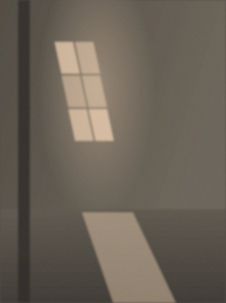
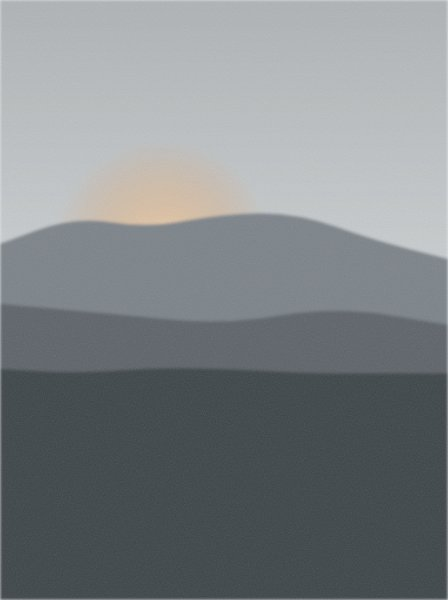
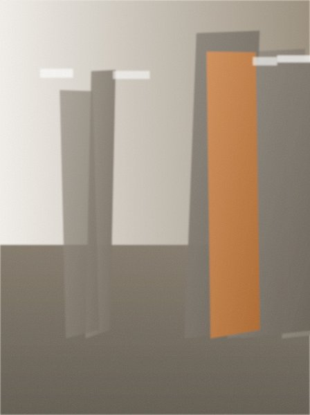

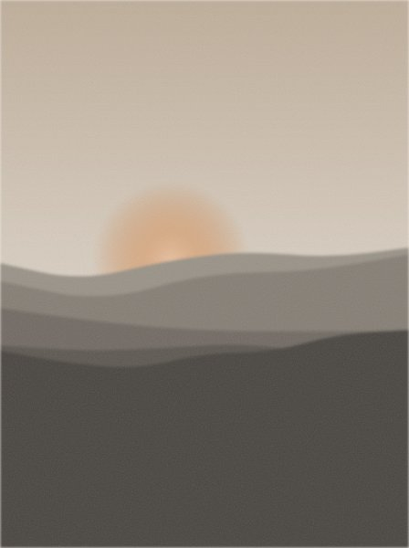
01A
02A
03A
04A
05A
浏览器里直接演示，再一键导出可编辑 PPTX、矢量 PDF 与逐页 PNG。
网页 PPT · 可编辑导出 · 图均为示意图
目录
Contents.
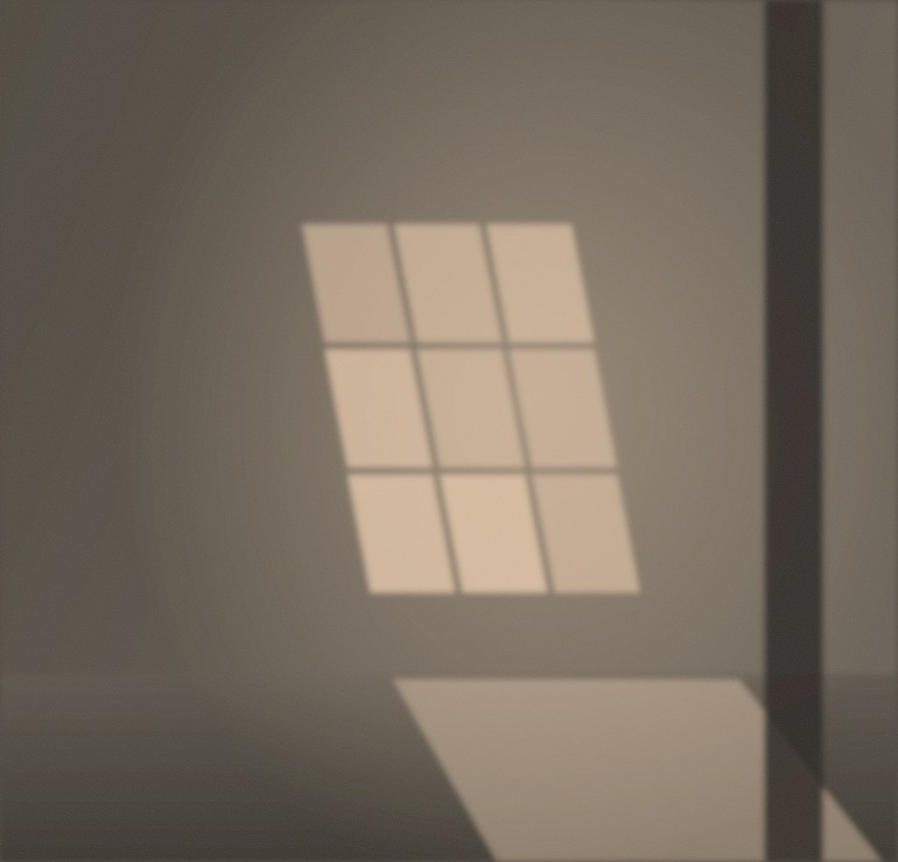
01
风格库
十二种风格，开场先挑一种
P. 04
02
测量与导出
先量后画，文字始终可编辑
P. 07
03
质量门
十六条规则，错误清零才交付
P. 10
04
工作流
从大纲到成稿的四步
P. 13
02 / 18
HTML 是唯一的源，
其余都是衍生物。
One source of truth.
— SKILL.md · 设计原则
03 / 18
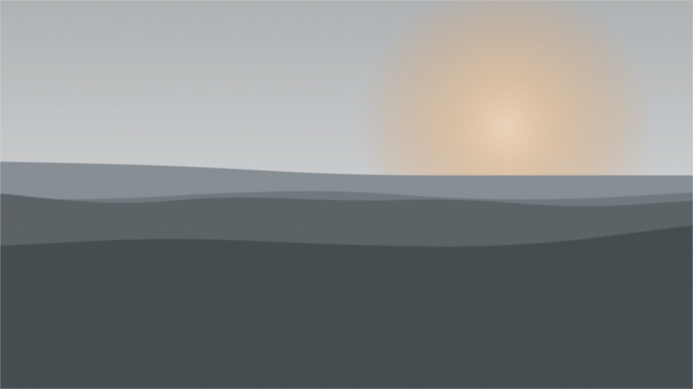
01
风格库
Twelve ways to set a page.
04 / 18
十二种风格，按场合挑一种。
A to L, on one sheet.
12
种风格
分五组：编辑排印、商务理性、舞台冲击、影像叙事、东方人文
A
杂志 · 暖纸
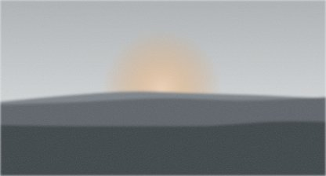
B
瑞士 · 网格
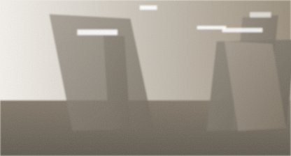
C
发布会 · 暗场
D
报刊 · 版面
E
大字报 · 粗野
F
柔和 · 产品
G
摄影集 · 画册
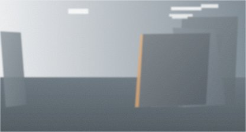
H
咨询 · 白皮书
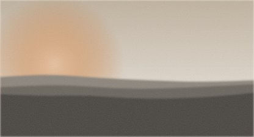
I
日式 · 极简
J
拼贴 · 手账
K
新中式 · 东方
L
工程制图
05 / 18
换皮，不如换版面。
Same content, new pages.
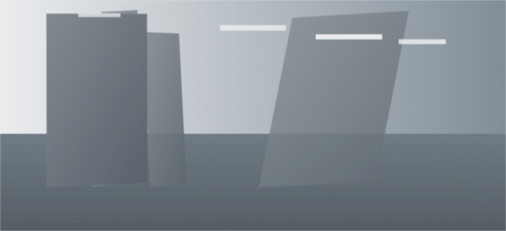
BEFORE
通用版式，换主题即换色
三套设计系统共用 L01–L24，换一个主题文件整套换色，版面结构始终一样。
24
个版式，三套系统共用
AFTER
独立版式，选风格即选版面
十二种风格各有一套版式，按角色登记；校验与导出只认角色，不认风格。
12
种风格，各有一套版式
06 / 18
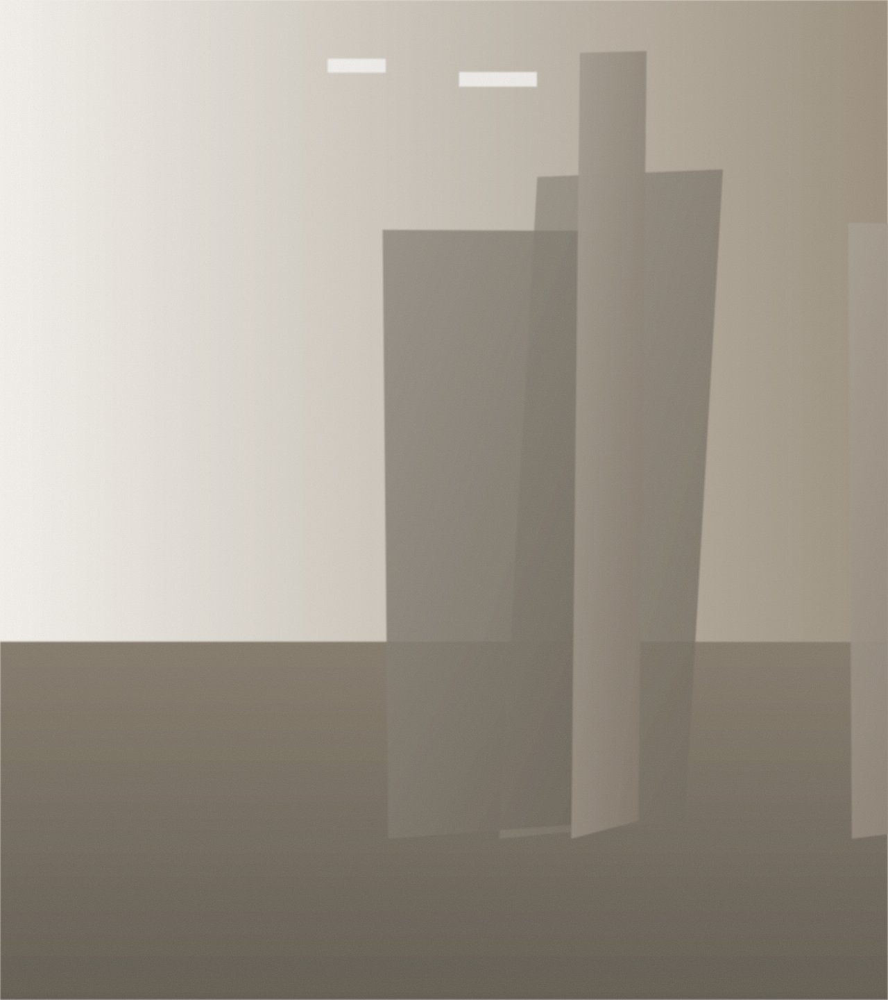
所见即所得，
靠的是测量。
Measure first, then draw.
导出器先让浏览器把每一页排好，再逐个量出元素的位置、尺寸、字号与颜色，按同样的坐标写进 PPTX。
圆角、描边、阴影、旋转与竖排换成 PowerPoint 原生形状；画不出的装饰单独截图，文字始终可编辑。
导出原语：圆角矩形 · 直线 · 燕尾 · 旋转 · 阴影 · 竖排
07 / 18
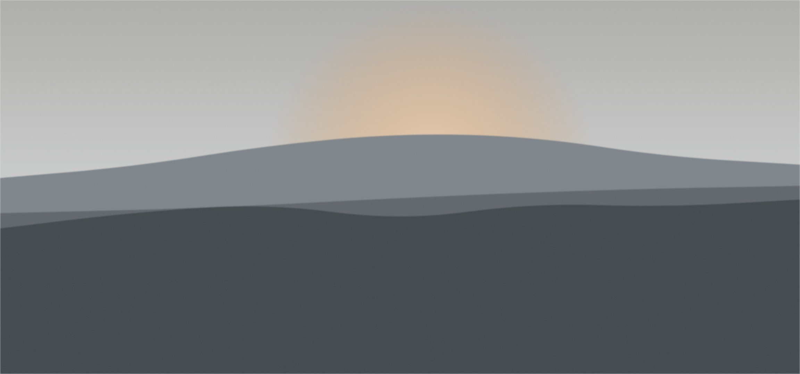
先选风格，再写内容
风格决定版面，版面决定一页能放多少字。
PLATE — 示意图
08 / 18
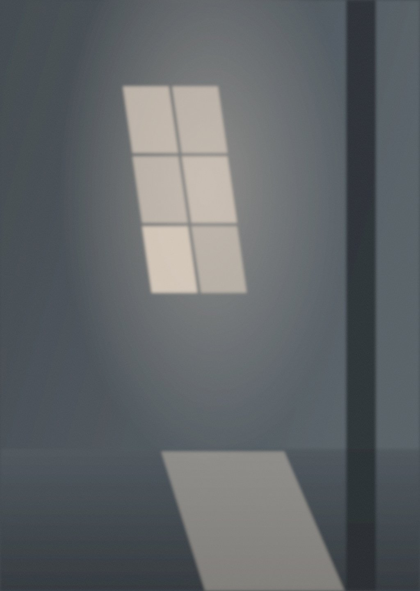
三件事，件件可验证。
Three promises, all checkable.
No. 1
浏览器里演示
方向键翻页，F 全屏，S 打开演讲者控制台，讲稿只给自己看。
No. 2
可编辑的 PPTX
文字是原生文本框，形状是原生形状，交给同事也能接着改。
No. 3
机器先把关
十六条规则查版式、字号、出处与导出一致性，错误清零才交付。
09 / 18
导出之前，先过十六道检查。

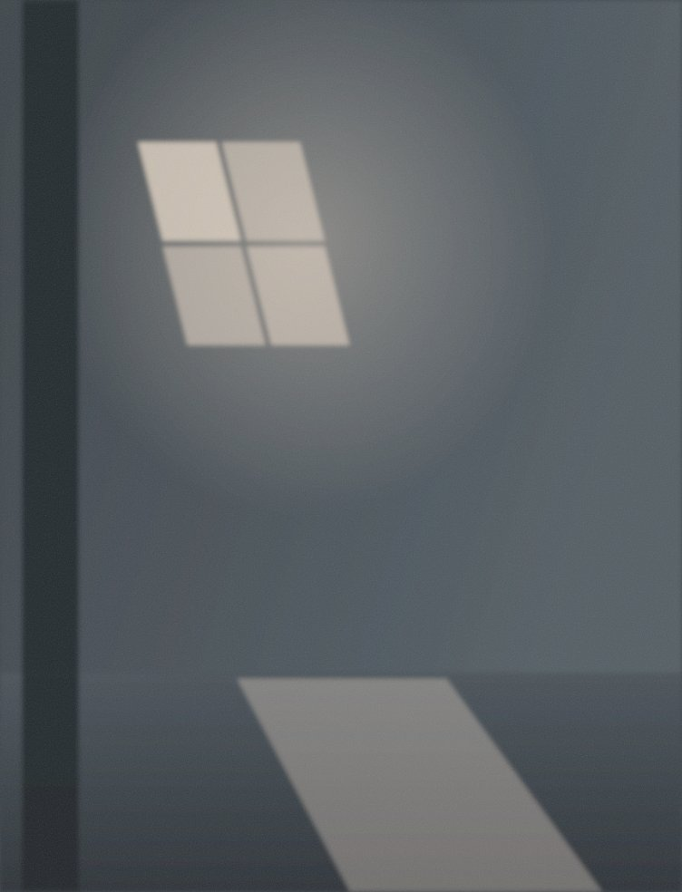
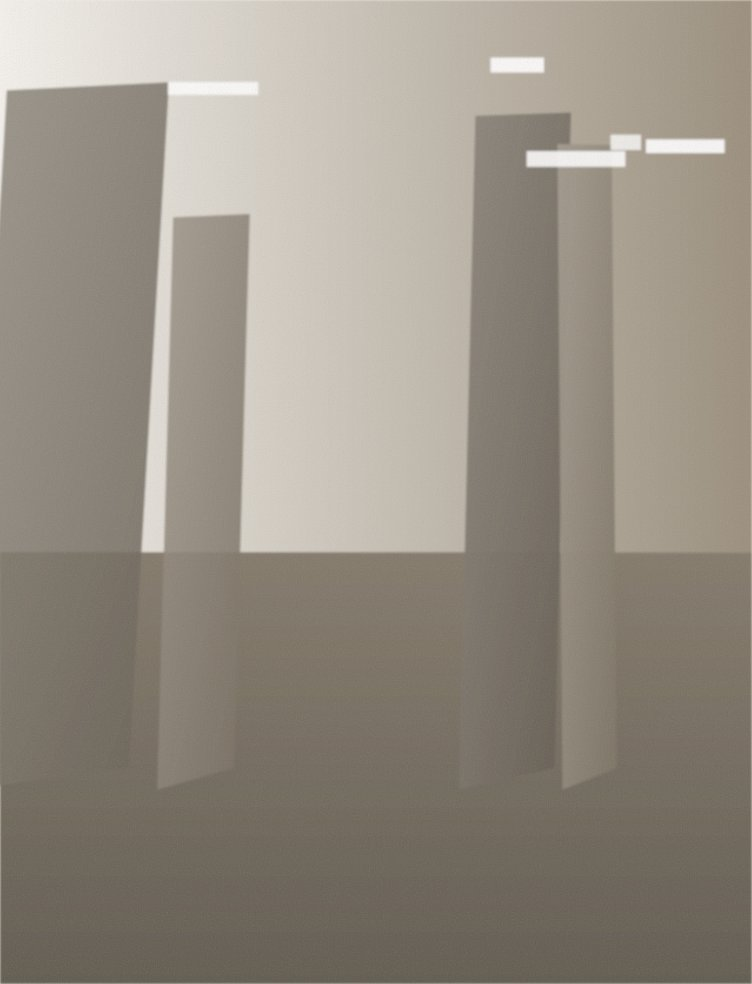
16
条校验规则
R1–R16，从版式注册一路查到 PPTX 导出一致性
20
页面角色
其中 12 个是每种风格必须覆盖的核心角色
3
导出格式
PPTX · PDF · PNG，HTML 是唯一的源
10 / 18
十六条规则，各管一摊。
Sixteen rules, six concerns.
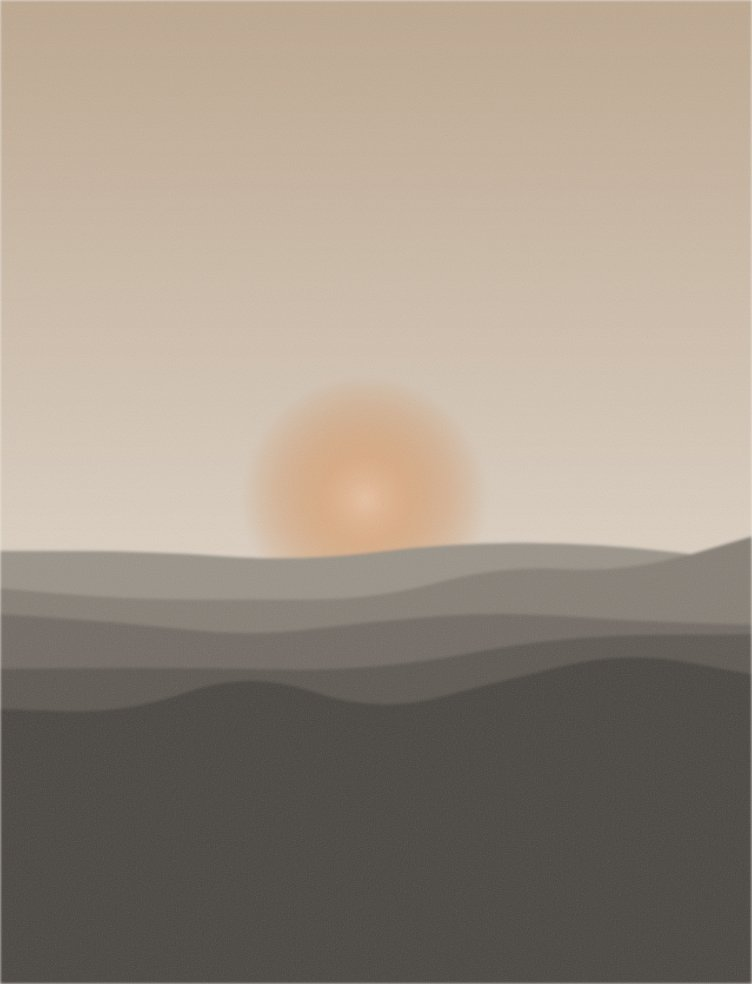
排版与几何
4
R3 · R4 · R7 · R9
版式与样式
4
R1 · R2 · R6 · R12
内容与数据
3
R5 · R8 · R14
可访问与媒体
3
R10 · R11 · R13
节奏
1
R15
导出一致
1
R16
11 / 18
一页纸，看懂规格。
The fine print.
ITEM
SPEC
SOURCE
画布
1280 × 720 px，导出时 px × 0.75 换算为 pt
assets/base.css
字号下限
16 px，溢出先删字、再换版式
validate.mjs · R4
校验规则
R1–R16，错误清零才能交付
validate.mjs
导出格式
PPTX · PDF · PNG，HTML 是唯一的源
SKILL.md
页面角色
20 个，其中 12 个核心角色
lib/roles.mjs
字体
SIL OFL 开源字体，按 deck 用字子集化
fetch-fonts.mjs
12 / 18
从大纲到成稿，四步
from outline to deck.


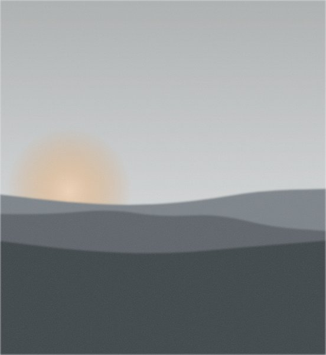

No. 1
选风格
看风格画廊，按场合挑一种，整份 deck 只用这一种。
No. 2
填版式
按内容形状找角色，复制版式骨架，只换文字和图片。
No. 3
过校验
查类名、字号、出处与导出一致性，错误必须清零。
No. 4
导出
一键得到可编辑 PPTX、矢量 PDF 与逐页 PNG。
14 / 18